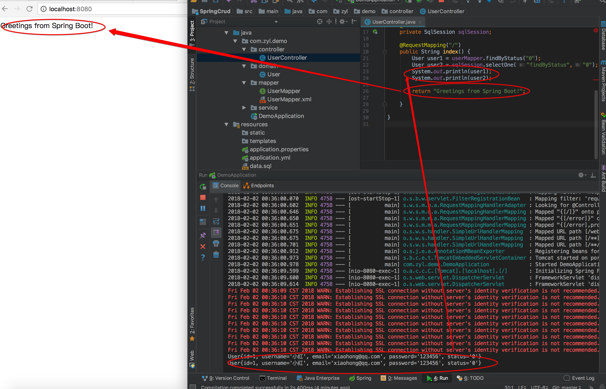

一个简单Spring Boot+MyBatis整合详解(2)
|本页总结了使用MyBatis的基本设置和示例代码.在示例代码中，我会选择MySQL。因为MySQL是比较成熟的开源数据库，互联网公司都在用的这个。我算是对MyBatis有一个初步的入门了，可以开始写一个简单的CRUD功能。
修改之后示例项目配置
基本工程文件：
.
|-- .indea
|-- .mvn
|-- src
|-- main
|-- java
| |-- com.zyl.demo
| | |-- controller //控制层
| | | |-- Usercontroller.java
| | |-- domain //模型层
| | | |-- User.java
| | |-- mapper //持久层
| | | |-- UserMapper.java //持久层接口类
| | | |-- UserMapper.xml //持久层实现类
| | |-- service //业务层
| | | |-- Userservice.java
| | |-- DemoApplication.java
|-- resources
|-- application.yml //配置
|-- data.sql //SQL文件
src/main/resources/application.yml
spring:
datasource:
url: jdbc:mysql://localhost:3306/mydb
username: root
password: root
driver-class-name: com.mysql.jdbc.Driver
src/main/com.zyl.demo/domain/User.java
User实体类
package com.zyl.demo.domain;
public class User {
private Long id; //用户名ID
private String username; //用户名
private String email; //电子邮箱
private String password; //密码
private String status; //活动状态
public String getStatus() {
return status;
}
public void setStatus(String status) {
this.status = status;
}
public Long getId() {
return id;
}
public void setId(Long id) {
this.id = id;
}
public String getUsername() {
return username;
}
public void setUsername(String username) {
this.username = username;
}
public String getEmail() {
return email;
}
public void setEmail(String email) {
this.email = email;
}
public String getPassword() {
return password;
}
public void setPassword(String password) {
this.password = password;
}
@Override
public String toString() {
return "User{" +
"id=" + id +
", username='" + username + '\'' +
", email='" + email + '\'' +
", password='" + password + '\'' +
", status='" + status + '\'' +
'}';
}
}
src/main/com.zyl.demo/mapper/UserMapper.java
如果像这个时候只有一个参数，就不需要指定@Param注解，但是如果有多个参数，则必须指定参数在SQL查询和方法参数之间的对应关系有。另外，在这里我们设置在@Select注释的SQL，但是为了做一个更灵活的配置使得使用XML文件将在以后描述。
User持久层接口类
package com.zyl.demo.mapper;
import com.zyl.demo.domain.User;
import org.apache.ibatis.annotations.Mapper;
import org.apache.ibatis.annotations.Param;
import org.apache.ibatis.annotations.Select;
@Mapper
public interface UserMapper {
@Select("SELECT * FROM users WHERE status = #{status}")
User findByStatus(@Param("status") String status);
}
src/main/com.zyl.demo/controller/UserController.java
UserMapper.findById（）和如何充分sqlSession.selectOne优势的例子（）。实际上，而不是在控制器直接使用，并且设置@服务和@Repository类内使用。
User控制层类
package com.zyl.demo.controller;
import com.zyl.demo.domain.User;
import com.zyl.demo.mapper.UserMapper;
import org.apache.ibatis.session.SqlSession;
import org.springframework.beans.factory.annotation.Autowired;
import org.springframework.web.bind.annotation.RequestMapping;
import org.springframework.web.bind.annotation.RestController;
@RestController
public class UserController {
@Autowired
private UserMapper userMapper;
@Autowired
private SqlSession sqlSession;
@RequestMapping("/")
public String index() {
User user1 = userMapper.findByStatus("0");
User user2 = sqlSession.selectOne("findByStatus","0");
System.out.println(user1);
System.out.println(user2);
return "Greetings from Spring Boot!";
}
}
以下效果：

Github项目地址：一个简单Spring Boot+ MyBatis应用CRUD